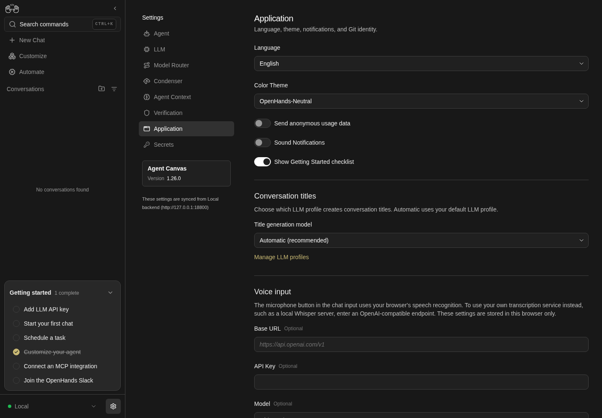
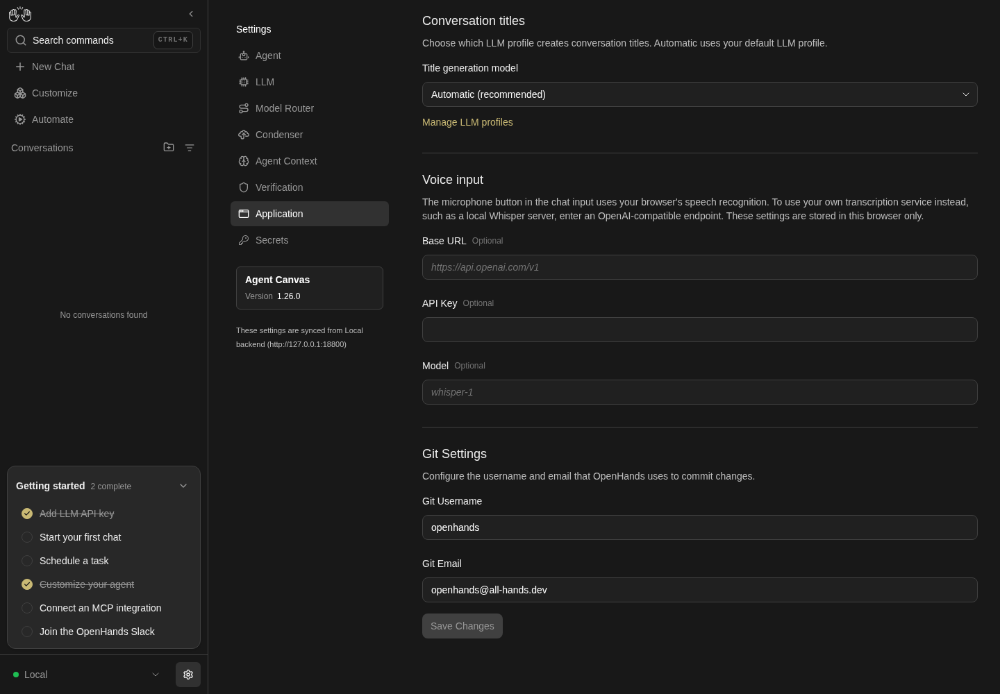

How to get to it
- Sidebar settings gear (
backend-selector-settings-link), then Application in the settings navigation (sidebar-settings-/settings/app). The gear lands on/settings/agents, not on this page. - Direct URL
/settings/app(also the default settings page for locked-to-Cloud deployments). - Command menu (
Control+korMeta+k, orcommand-menu-triggerin the sidebar): search "Application", choose Application settings ("Change app language, theme, and preferences"). - Manage LLM profiles link under Conversation titles leaves this page for
/settings/llm(F16.manage-profiles-link); the LLM settings row menu is how a user deletes a profile (owned by the LLM profiles family).
Before you start
Start with the common launch and health checks, then follow this family’s preconditions in order. Recipes share the fixtures and state named below.
Preconditions:
- Baseline state (launched, doctored,
onboard --skipdone; it stores analytics off, so the analytics switch starts unchecked). F16.title-model,F16.title-model-fallbackand the agent half ofF16.git-identityneed LLM profiles:control-openhands llm preset deepseek --api-key-file <key file>(or--api-key-env DEEPSEEK_API_KEY), which savesdeepseek-flash(active) anddeepseek-pro.- Read the starting values once:
control-openhands api GET /api/settings; backend-saved fields are underbody.misc_settings.app_preferences(language,user_consents_to_analytics,enable_sound_notifications,title_llm_profile,git_user_name,git_user_email). Keys absent there mean defaults. - The three switches are
<input hidden>inside a<label>: click the label text scoped to the form, and read state withcontrol-openhands browser eval "document.querySelector('[data-testid=enable-analytics-switch]').checked"(same forenable-sound-notifications-switch,show-getting-started-checklist-switch). - Every bullet starts on
/settings/appat the desktop viewport unless it says otherwise (control-openhands browser goto /settings/app, thencontrol-openhands browser wait 'testid=submit-button'). F16.analytics-cloudis blocked without an OpenHands Cloud backend and account.
Behavior inventory
19 stable behavior IDs and their expected behavior
F16.openthe page opens from the settings navigation, the command menu and the direct URL; every section renders and Save Changes is disabled while nothing has changed. Read recipe ↓F16.languagechoosing a language and saving switches the whole UI at once and persists after a reload;<html lang>and<html dir>follow the chosen language (rtlfor Arabic). Read recipe ↓F16.color-themechoosing a colour theme applies it immediately without Save, persists after a reload and on other pages, and is never sent to the backend. Read recipe ↓F16.analyticsthe "Send anonymous usage data" switch saves with the form and sets browser telemetry consent to granted/denied. Read recipe ↓F16.analytics-cloudon a Cloud backend the analytics switch is forced on and disabled. Read recipe ↓F16.soundthe "Sound Notifications" switch saves with the form; with it on, a sound plays when the agent finishes or needs input. Read recipe ↓F16.checklistthe "Show Getting Started checklist" switch hides or shows the sidebar checklist immediately, without Save, and survives a reload. Read recipe ↓F16.title-modelthe Title generation model dropdown offers "Automatic (recommended)" plus onename · modeloption per LLM profile; the choice persists and new conversations still get an automatic title. Read recipe ↓F16.title-model-fallbackif the chosen profile is deleted (from LLM settings, or outside the UI), the dropdown shows Automatic and the form stays clean. Read recipe ↓F16.manage-profiles-link"Manage LLM profiles" goes to/settings/llm. Read recipe ↓F16.voice-endpointVoice input Base URL, API Key (masked) and Model save on every keystroke in this browser only, independently of Save; the key lives in session storage. Read recipe ↓F16.git-identityGit Username and Git Email save with the form, persist after a reload, and are what the agent's commits use. Read recipe ↓F16.git-identity-validationan email without@is refused by native validation; empty fields save the defaultsopenhands/openhands@all-hands.dev. Read recipe ↓F16.save-statesSave is enabled only while a saved field differs from the stored value; while a save is pending the whole form, Save included, is replaced by theapp-settings-skeleton(so the "Saving..." label in the source never shows); success toasts "Settings saved", failure toasts the HTTP error and should keep the user's edits for a retry. Read recipe ↓F16.keyboardevery control, including the three switches, is reachable with Tab and exposed to assistive technology. Read recipe ↓F16.phonethe form fits a 390 px viewport without horizontal overflow and Save is reachable by scrolling. Read recipe ↓F16.title-model-clearthe Title generation model combobox has a clear (×) button, shown on hover; it resets the choice to Automatic (recommended). Read recipe ↓F16.dropdown-filtertyping into the Language (or any) combobox filters its options; Escape restores the stored value and leaves Save disabled. Read recipe ↓F16.browser-scopebackend-saved preferences (language and the rest of the Save group) follow the user to a fresh browser profile, while theme and checklist visibility return to their defaults there. Read recipe ↓
Readable recipes
Read each script from top to bottom. Code is copied from the map; prose gives the action, expected observation, and conditions. <id>, <run> and similar placeholders stand for values from your own run. Short forms such as browser count continue the same control-openhands invocation; they are kept as documented.
Expected observations describe the recipe’s contract. Captures below selected recipes show representative real states from this snapshot; they do not mark every mapped behavior as passed. Follow cleanup before moving to another family.
No recipes match. Try another word or a behavior ID.
Open from navigation #
- NoteFrom
/run - Do
control-openhands browser click 'testid=backend-selector-settings-link' - Do
control-openhands browser click 'testid=sidebar-settings-/settings/app' - Check
control-openhands browser url - Check
control-openhands browser snapshot 'testid=app-settings-screen' - Do
control-openhands browser screenshot --feature F16.open --name desktop - ExpectThe URL ends in
/settings/app; the snapshot shows comboboxes "Language" (English), "Color Theme" (OpenHands-Neutral) and "Title generation model" (Automatic (recommended)), headings "Conversation titles", "Voice input" and "Git Settings", andbutton "Save Changes" [disabled].

Application settings upper section shows language, color theme, analytics, sounds, checklist, conversation title model and voice input endpoint fields.
Representative documentation capture, not a complete run of this recipe or family. Captured on an isolated local backend at desktop viewport using the current main checkout.
How this screenshot was taken
canvas: 1.26.0 · agent server: 1.53.0 · sdk: 1.53.0 · automation: 1.19.0
OH_VERIFY_RUN="$OH_VERIFY_RUN" control-openhands browser goto /settings/app
OH_VERIFY_RUN="$OH_VERIFY_RUN" control-openhands browser wait testid=app-settings-screen
OH_VERIFY_RUN="$OH_VERIFY_RUN" control-openhands browser snapshot testid=app-settings-screen
OH_VERIFY_RUN="$OH_VERIFY_RUN" control-openhands browser screenshot --feature F16.open --name application-settings --full-pageCommand-menu and URL entries #
- Do
control-openhands browser goto /(the previous bullet ends on
/settings/app, where the URL check would pass at once), - Do
control-openhands browser press Control+k - Do
control-openhands browser type 'testid=command-menu >> role=combobox' Application - Check
control-openhands browser snapshot 'testid=command-menu'(option "Application settings Change app language, theme, and preferences.
- NoteGo" is
[selected]), - Do
control-openhands browser press Enter - Check
control-openhands browser url - Noteit ends in
/settings/app. - NoteFor the URL entry run
- Do
control-openhands browser goto /settings/app - Check
control-openhands browser enabled 'testid=submit-button'(
false) and - Check
control-openhands browser attr 'testid=sidebar-settings-/settings/app' aria-current(
page).
Language #
- Do
control-openhands browser click 'testid=language-input'(15 options),
- Do
control-openhands browser click 'role=option[name="Français"]' - Check
control-openhands browser enabled 'testid=submit-button'(
true), - Do
control-openhands browser click 'testid=submit-button' - Check
control-openhands browser text 'testid=submit-button' - ExpectIt reads
Enregistrer les modificationswithout a reload. - Do
control-openhands browser reload - Check
control-openhands browser value 'testid=language-input'(
Français), - Do
control-openhands browser screenshot --feature F16.language --name french(the screenshot, not a scoped snapshot, shows the sidebar's "Nouvelle discussion" and the headings "Titres des conversations", "Saisie vocale") and
- Check
control-openhands api GET /api/settings(
languageisfr). - NoteThen check the document language with
- Do
control-openhands browser eval "document.documentElement.lang + ' ' + document.documentElement.dir"(
fr ltr) and the translated sidebar trigger with - Check
control-openhands browser attr 'testid=command-menu-trigger' aria-label(
Rechercher des commandes). - NoteChoose
role=option[name="Arabic"]the same way (click the input, the option, Save, reload): theevalreadsar rtl, and - Check
control-openhands browser bbox 'aside[data-collapsed]'has
x1140, so the 300 px sidebar now sits at the right edge of the 1440 px viewport. - Do
control-openhands browser screenshot --feature F16.language --name arabicshows the whole layout flipped right to left: the sidebar on the right, the settings navigation to its left, and the form on the left with its Arabic labels and values aligned right.
- NoteRestore:
- Do
control-openhands browser click 'testid=language-input' - Do
control-openhands browser click 'role=option[name="English"]' - Do
control-openhands browser click 'testid=submit-button' - Do
control-openhands browser reload - Check
control-openhands browser text 'testid=submit-button'reads
Save Changesand theevalreadsen ltr.
Colour theme #
- Do
control-openhands browser click 'testid=color-theme-input' - Check
control-openhands browser snapshot 'role=listbox'(OpenHands-DeepSea, OpenHands-Neutral [selected], OpenHands-Neo, Light+, Solarized Light),
- Do
control-openhands browser click 'role=option[name="Light+"]' - Do
control-openhands browser eval "document.documentElement.style.colorScheme + ' ' + localStorage.getItem('openhands-color-theme')"(
light light-plus) and - Check
control-openhands browser enabled 'testid=submit-button'(
false: no Save needed). - Do
control-openhands browser screenshot --feature F16.color-theme --name light-plusshows a white page.
- NoteSecond views:
- Do
control-openhands browser reload - Check
control-openhands browser value 'testid=color-theme-input'(
Light+); - Do
control-openhands browser goto / - Do
control-openhands browser eval "getComputedStyle(document.body).backgroundColor + ' ' + document.documentElement.style.colorScheme"(
rgb(255, 255, 255) light); - Check
control-openhands api GET /api/settings - Notecontains no theme key.
- NoteRestore on
/settings/app(control-openhands browser goto /settings/app; the second view left/) by choosingrole=option[name="OpenHands-Neutral"]the same way (dark openhands-neutral).
Analytics consent #
- Do
control-openhands browser click 'testid=app-settings-screen >> text=Send anonymous usage data' - Noteread the switch with the
evalfrom Preconditions (true), - Do
control-openhands browser click 'testid=submit-button' - Wait
control-openhands browser wait-text 'Settings saved' - Do
control-openhands browser reload - Noteread the switch again (
true), - Check
control-openhands api GET /api/settings(
user_consents_to_analytics: true) and - Do
control-openhands browser eval "localStorage.getItem('openhands-telemetry-consent')"(
granted). - NoteRestore by clicking the label again and saving; consent reads
deniedand the APIfalse.
Cloud forces analytics · Blocked prerequisite #
- NoteBlocked: needs a Cloud backend selected in the backend selector.
- NoteExpected:
- Check
control-openhands browser enabled 'testid=enable-analytics-switch'is
falseand the switch reads checked.
Sound notifications #
- Do
control-openhands browser click 'testid=app-settings-screen >> text=Sound Notifications' - Do
control-openhands browser click 'testid=submit-button' - Wait
control-openhands browser wait-text 'Settings saved' - Do
control-openhands browser reload - Noteread
enable-sound-notifications-switch(true) and - Check
control-openhands api GET /api/settings(
enable_sound_notifications: true). - NoteRestore by toggling and saving again (
false). - NoteAudible half: with the switch on and saved,
- Wait
control-openhands conversation start --prompt "Reply with only the word ok. Do not run any tools." --wait --timeout 180 - Do
control-openhands browser media - Note:
playslists one/assets/notification-<hash>.mp3at the moment the conversation finished. - NoteWith the switch off, the same check after a conversation reads
plays: [](theF16.git-identityconversation below doubles as that negative check). - NoteTurn the switch off and save afterwards (
control-openhands browser goto /settings/appfirst:conversation startleft the browser on the conversation).
Getting Started checklist #
- Check
control-openhands browser count 'testid=sidebar-onboarding-checklist'(
1), - Do
control-openhands browser click 'testid=app-settings-screen >> text=Show Getting Started checklist' - Notethen the same
count(0, immediately) and - Check
control-openhands browser enabled 'testid=submit-button'(
false). - Do
control-openhands browser screenshot --feature F16.checklist --name hiddenshows the sidebar without the "Getting started" card.
- Do
control-openhands browser reload - Notekeeps the count at
0and the switch unchecked. - NoteClick the label again to restore; the count returns to
1.
Title generation model #
- Do
control-openhands browser click 'testid=title-llm-profile-input' - Check
control-openhands browser snapshot 'role=listbox' - Note: options
Automatic (recommended),deepseek-flash · deepseek/deepseek-flash,deepseek-pro · deepseek/deepseek-v4-pro. - Do
control-openhands browser click 'role=option >> has-text=deepseek-pro' - Do
control-openhands browser click 'testid=submit-button' - Wait
control-openhands browser wait-text 'Settings saved' - Do
control-openhands browser reload - Check
control-openhands browser value 'testid=title-llm-profile-input'(
deepseek-pro · deepseek/deepseek-v4-pro) and - Check
control-openhands api GET /api/settings(
title_llm_profile: "deepseek-pro"). - Wait
control-openhands conversation start --prompt "Reply with only the word ok. Do not run any tools." --wait --timeout 180 - Noteand, a few seconds later,
- Check
control-openhands conversation status <id> - Notewith the
idit printed:titleis a generated title: an emoji and a short phrase whose wording varies (for example🔧 Acknowledge with ok only). - ExpectThe start output's own
titlemay already be set; when it is stillnull, the title is written a few seconds after the run finishes. - NoteReturn with
- Do
control-openhands browser goto /settings/app - Notechoose
role=option[name="Automatic (recommended)"], save;title_llm_profileis then absent fromapp_preferences.
Manage LLM profiles link #
- Do
control-openhands browser click 'role=link[name="Manage LLM profiles"]' - Check
control-openhands browser url - Noteit ends in
/settings/llmand - Check
control-openhands browser count 'testid=profile-row'lists the profiles.
Deleted profile falls back #
- NoteArrange a throwaway profile:
- Arrange
control-openhands llm set --profile qa-title --model deepseek/deepseek-flash --api-key-file <key file> --no-activate --no-validate - NoteOn
/settings/appselect it (control-openhands browser click 'testid=title-llm-profile-input',control-openhands browser click 'role=option >> has-text=qa-title', save). - NoteDelete it through the UI:
- Do
control-openhands browser click 'role=link[name="Manage LLM profiles"]' - Do
control-openhands browser click 'testid=profile-row >> has-text=qa-title >> testid=profile-menu-trigger' - Do
control-openhands browser click 'testid=profile-actions-menu >> testid=profile-delete' - Do
control-openhands browser click 'testid=delete-profile-confirm' - Do
control-openhands browser click 'testid=sidebar-settings-/settings/app' - Check
control-openhands browser value 'testid=title-llm-profile-input'is
Automatic (recommended), Save is disabled, andtitle_llm_profileis absent from the API'sapp_preferences. - NoteFor a preference that goes stale outside the UI, arrange
- Arrange
control-openhands api PATCH /api/settings --data '{"misc_settings_diff":{"app_preferences":{"title_llm_profile":"qa-missing"}}}' --write - Do
control-openhands browser reload - Note: the dropdown still shows
Automatic (recommended)and Save stays disabled, while the API keepsqa-missinguntil the next Save of this form. - NoteAny Save writes the form's current preferences, which no longer hold the stale key, so saving an unrelated change removes it: toggle Sound Notifications, save, toggle back, save.
Voice input endpoint #
- Check
control-openhands browser fill 'testid=transcription-base-url-input' http://127.0.0.1:9/v1 - Do
control-openhands browser fill 'testid=transcription-api-key-input' qa-dummy-key - Do
control-openhands browser fill 'testid=transcription-model-input' qa-whisper - Check
control-openhands browser enabled 'testid=submit-button'(
false) and - Check
control-openhands browser attr 'testid=transcription-api-key-input' type(
password). - NoteAfter
- Do
control-openhands browser reload - Check
control-openhands browser value 'testid=transcription-model-input'is
qa-whisper(same for the other two). - Do
control-openhands browser eval "localStorage.getItem('openhands-transcription-endpoint') + ' | session=' + sessionStorage.getItem('openhands-transcription-api-key')"reads
{"baseUrl":"http://127.0.0.1:9/v1","model":"qa-whisper"} | session=qa-dummy-key; the API body has noqa-whisper. - NoteClear each with
- Check
control-openhands browser fill 'testid=transcription-base-url-input' ''(and the other two).
- NoteUsing the endpoint from the composer microphone is not driven here (needs microphone capture and a transcription server).
Git identity #
- Do
control-openhands browser fill 'testid=git-user-name-input' 'QA Tester' - Do
control-openhands browser fill 'testid=git-user-email-input' 'qa-tester@example.com' - Do
control-openhands browser click 'testid=submit-button' - Wait
control-openhands browser wait-text 'Settings saved' - Do
control-openhands browser reload - Check
control-openhands browser value 'testid=git-user-name-input'(
QA Tester) and - Check
control-openhands api GET /api/settings(
git_user_name,git_user_emailset). - NoteAgent half:
- Wait
control-openhands conversation start --prompt "Run exactly this command and reply with only its output: env | grep -c '^GIT_'; git init -q qa_t && cd qa_t && git commit --allow-empty -qm x; git log -1 --format='%an <%ae>'" --wait --timeout 240 - Check
control-openhands conversation events <id> --kinds ObservationEvent,MessageEvent - Notewith the
idfrom the start output. - NoteExpected:
QA Tester <qa-tester@example.com>. Known failure: the observation is0 Author identity unknown ...: the identity is stored only inmisc_settings.app_preferencesand never reaches the agent.

Application settings lower section shows voice input endpoint fields and Git username and email above Save Changes.
Representative documentation capture, not a complete run of this recipe or family. Captured on an isolated local backend at desktop viewport using the current main checkout.
How this screenshot was taken
canvas: 1.26.0 · agent server: 1.53.0 · sdk: 1.53.0 · automation: 1.19.0
OH_VERIFY_RUN="$OH_VERIFY_RUN" control-openhands browser goto /settings/app
OH_VERIFY_RUN="$OH_VERIFY_RUN" control-openhands browser scroll testid=submit-button
OH_VERIFY_RUN="$OH_VERIFY_RUN" control-openhands browser screenshot --feature F16.git-identity --name application-settings-bottomGit validation and defaults #
- Do
control-openhands browser fill 'testid=git-user-email-input' 'not-an-email' - Do
control-openhands browser click 'testid=submit-button' - Do
control-openhands browser eval "document.querySelector('[data-testid=git-user-email-input]').validationMessage"(
Please include an '@' in the email address. ...); the API email is unchanged. - Do
control-openhands browser fill 'testid=git-user-email-input' '' - Do
control-openhands browser fill 'testid=git-user-name-input' '' - Noteclick submit,
- Wait
control-openhands browser wait-text 'Settings saved' - Do
control-openhands browser reload - Note: the inputs read
openhandsandopenhands@all-hands.dev, which also restores the baseline.
Save button states #
- NoteClick the analytics label once:
- Check
control-openhands browser enabled 'testid=submit-button'is
true; click it again:false(back to the stored value). - NoteEach successful save above made while the UI is in English shows the toast found by
- Wait
control-openhands browser wait-text 'Settings saved' - Notethe Arabic save and the English restore in
F16.languageare made from a French and an Arabic UI and toastParamètres enregistrésandتم حفظ الإعداداتinstead (see Gotchas). - NotePending and failure: run
- Do
control-openhands service stop agent-server(the open page keeps its form), click
testid=app-settings-screen >> text=Sound Notifications, start a sampler with - Do
control-openhands browser eval "(() => { window.__seen = []; window.__iv = setInterval(() => { const s = document.querySelector('[data-testid=submit-button]'); const k = (s ? s.textContent : '-') + ' skeleton=' + !!document.querySelector('[data-testid=app-settings-skeleton]'); if (window.__seen.at(-1) !== k) window.__seen.push(k); }, 10); return 'started'; })()" - Noteclick
testid=submit-button, - Wait
control-openhands browser wait-text 'HTTP request failed'(the toast starts
HTTP request failed (502 Bad Gateway)and names the refused Agent Server port), then - Do
control-openhands browser eval "(() => { clearInterval(window.__iv); return window.__seen.join(' -> '); })()" - Note: it starts with
Save Changes skeleton=false -> - skeleton=true, i.e. the form and its Save button are replaced by the skeleton while pending;Saving...never appears. - NoteBy the time the failure toast is read the form has usually come back, adding
-> Save Changes skeleton=false; assert the prefix. - NoteExpected after the failure: the Sound switch stays on so the user can retry. Known failure:
- Do
control-openhands browser eval "document.querySelector('[data-testid=enable-sound-notifications-switch]').checked"is
falseand Save is disabled: the edit is silently discarded. - NoteBring the backend back with
- Do
control-openhands restart - Check
control-openhands doctor - Do
control-openhands browser goto /settings/app
Keyboard and screen readers #
- Do
control-openhands browser focus 'testid=color-theme-input' - Notethen repeat
- Do
control-openhands browser press Tab - Do
control-openhands browser eval "(document.activeElement.getAttribute('data-testid')||'') + ' ' + document.activeElement.tagName" - NoteExpected (the acceptance criterion): focus visits the three switches before
title-llm-profile-input. Known failure, today's result: the first Tab lands ontitle-llm-profile-input; - Check
control-openhands browser snapshot 'testid=app-settings-screen' --feature F16.keyboard --name ariashows the switches only as
text: Send anonymous usage data Sound Notifications Show Getting Started checklist, with no switch or checkbox nodes.
Phone layout #
- Do
control-openhands browser viewport phone - Do
control-openhands browser goto /settings/app - Check
control-openhands browser bbox 'testid=app-settings-screen'(
pageHorizontalOverflow: false, width 348 at x 16), - Do
control-openhands browser screenshot --feature F16.phone --name top - Do
control-openhands browser scroll 'testid=submit-button' - Check
control-openhands browser bbox 'testid=submit-button'(
insideViewport: true) and - Do
control-openhands browser screenshot --feature F16.phone --name bottom - NoteReturn with
- Do
control-openhands browser viewport desktop
Clear the title model #
- Do
control-openhands browser click 'testid=title-llm-profile-input' - Do
control-openhands browser click 'role=option >> has-text=deepseek-flash'(Save enables),
- Do
control-openhands browser hover 'testid=title-llm-profile-input' - Do
control-openhands browser click 'testid=title-llm-profile-input >> xpath=../..//button[not(@aria-label)]' - Check
control-openhands browser value 'testid=title-llm-profile-input'reads
Automatic (recommended)and - Check
control-openhands browser enabled 'testid=submit-button'is
false. - NoteWithout the hover the click times out (
<div ...> intercepts pointer events).
Filter a dropdown by typing #
- Do
control-openhands browser fill 'testid=language-input' Deu - Check
control-openhands browser snapshot 'role=listbox' - Note: the only option is
Deutsch. - NoteSave is briefly
truewhile the text is typed; - Do
control-openhands browser press Escape - Noterestores
- Check
control-openhands browser value 'testid=language-input' - Noteto
Englishand - Check
control-openhands browser enabled 'testid=submit-button' - Noteto
false.
Browser vs backend scope #
- NoteChoose
Deutschintestid=language-inputand save, chooseSolarized Lightintestid=color-theme-input, and hide the checklist with - Check
control-openhands browser click 'testid=show-getting-started-checklist-switch >> xpath=ancestor::label'(the label text is German now).
- Do
control-openhands browser reset - Do
control-openhands onboard --skip - Do
control-openhands browser goto /settings/app - Wait
control-openhands browser wait 'testid=submit-button' - Check
control-openhands browser text 'testid=submit-button'is
Änderungen speichernand - Check
control-openhands browser value 'testid=language-input'is
Deutsch(backend), while - Check
control-openhands browser value 'testid=color-theme-input'is
OpenHands-Neutral, - Do
control-openhands browser eval "localStorage.getItem('openhands-color-theme')"is
nulland - Check
control-openhands browser count 'testid=sidebar-onboarding-checklist'is
1(browser-only, back to defaults). - NoteRestore English (the option keeps its English name in the German UI):
- Do
control-openhands browser click 'testid=language-input' - Do
control-openhands browser click 'role=option[name="English"]' - Do
control-openhands browser click 'testid=submit-button' - Do
control-openhands browser reload - Wait
control-openhands browser wait 'testid=submit-button' - Check
control-openhands browser text 'testid=submit-button'reads
Save Changesand - Check
control-openhands api GET /api/settings --pick misc_settings.app_preferences.languageis
en.
After the family #
- ExpectAfter the family,
- Check
control-openhands browser errors --app-only - Notereports
appErrors: 0. - NoteRequests to
registry.npmjs.org(update check) and Google Fonts fail through the sandbox proxy; they are not app errors.
Gotchas and known limits
- Two save models on one form: theme, checklist and voice input apply instantly and ignore Save; the rest is dropped silently if you navigate away before Save (filling
git-user-name-input, then clickingsidebar-settings-/settings/secretsand back, shows the storedopenhandsagain;browser dialogsis empty). Assert the instant ones without clicking Save, and never expect Save to enable for them. - The success toast uses the language that was active when you clicked Save, not the one you saved. In
F16.languagethe French Save toastsSettings saved, the Arabic Save toastsParamètres enregistrés, and the English restore toastsتم حفظ الإعدادات, sowait-text 'Settings saved'times out on the last two. Assert withbrowser text 'testid=submit-button'after a reload, or read the toast withbrowser toasts. - Some chrome strings stay English after a language switch: the sidebar Automate label in every language (the automation interface supplies it, not the translation file), and most of the command menu's own texts (placeholder
Search actions, pages, and settings..., the search box'sSearch commandsname, the group names and the item names) in French and 11 other languages. Only the Model Router and Agent Context items are translated (Routeur de modèlesandContexte de l'agentin French), because they reuse the settings navigation's titles. Do not treat the English ones as a language switch failure; the sidebar trigger'sSearch commandsis translated. - In Arabic (
dir="rtl") a switch that is on draws its thumb outside its track (onshow-getting-started-checklist-switchthe track spansx778–818 and the thumb 822–838). Assert switch state with.checked, not from a screenshot. - The switches are hidden checkboxes:
browser click 'testid=enable-analytics-switch'times out (element is not visible). Click the label text scoped totestid=app-settings-screen, and read.checkedthrougheval. role=option[name^=...]is not supported by the selector parser; userole=option >> has-text=<profile>for profile options whose names include the model.conversation startleaves the browser on the conversation page, which also has atestid=submit-button;goto /settings/appbefore the next settings step or clicks hit the composer.- Which profile actually generated a title is not visible in the UI, the conversation API or the stack logs;
F16.title-modelproves the preference is stored and a title appears, not which model wrote it. onboard --skipstores analytics off, so a fresh run starts with the switch unchecked even though the code defaults to on when the preference is missing.browser storagelistslocalStorage, andbrowser storage --sessionlistssessionStorage, where the voice-input key lives. With--valuesthat key prints as<redacted>, so the recipe reads its dummy value witheval. The key disappears in a new tab or browser session by design.- Deleting a profile through the LLM settings UI clears a matching title preference itself; only a profile removed outside the UI leaves a stale
title_llm_profilethat this page shows as Automatic. - The Title generation model combobox has a clear (×) button with no accessible name (
- buttonin the snapshot, visible as × at phone width). At desktop width it only takes clicks afterbrowser hoveron the input (F16.title-model-clear); otherwise use the Automatic option. browser evalwraps its argument as an expression: statements separated by;fail withSyntaxError: Unexpected token ';'; wrap them in(() => { ...; return x; })().- With
service stop agent-server, abrowser reloadof/settings/appshows the backend-unavailable screen (agent-server-onboarding-screen, Manage backends), not the form: stop the service only after the page is loaded, andrestartafterwards. - Known product bugs (repro candidates): git identity never reaches the agent (#17899); switches are not keyboard reachable or announced (#17900); a failed save discards the user's edits (
F16.save-states) (#17927). - The harness builds with
VITE_DO_NOT_TRACK=1, so PostHog never starts:browser network --filter 'posthog|z\.openhands\.dev'reportstotal0, also after analytics consent is granted (#18086). A browser-only Do Not Track setting, and a non-DNT build where consent starts PostHog, cannot be driven with the harness (F16.analytics). - The title model's clear button has no test id: the recipe's xpath relies on DOM nesting to skip the unnamed
Show suggestionsbutton. If both ever match, Playwright's strict mode fails the click instead of pressing the wrong one; report it as harness drift.
Source paths: src/routes/app-settings.tsx, src/components/features/settings/app-settings/, src/components/features/settings/settings-switch.tsx, src/themes/color-theme/, src/utils/transcription-endpoint-storage.ts, src/api/settings-service/settings-service.api.ts.